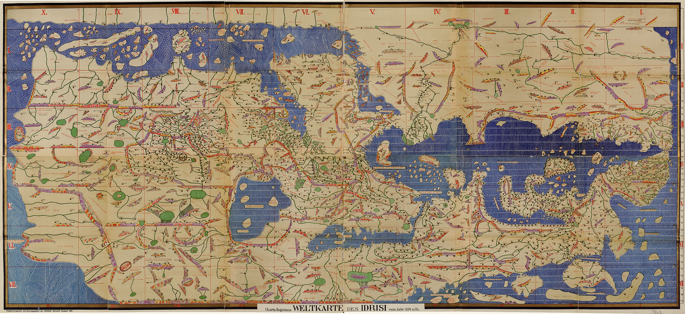
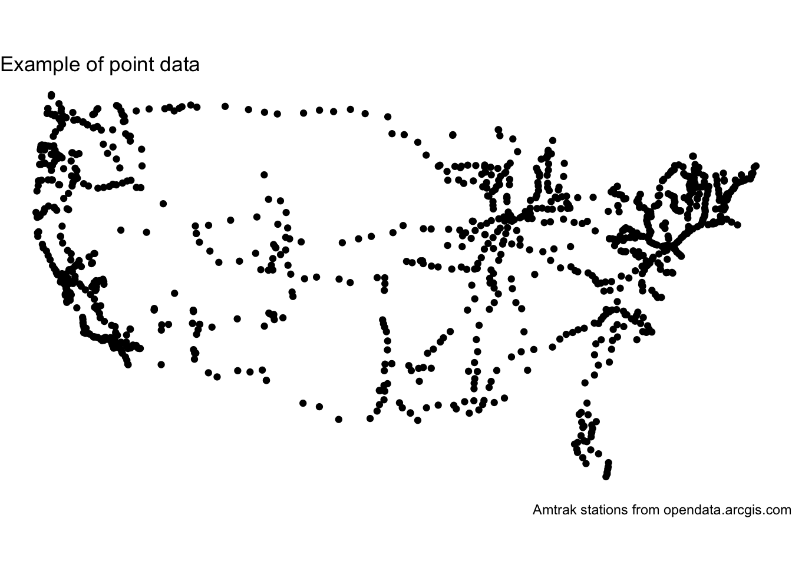
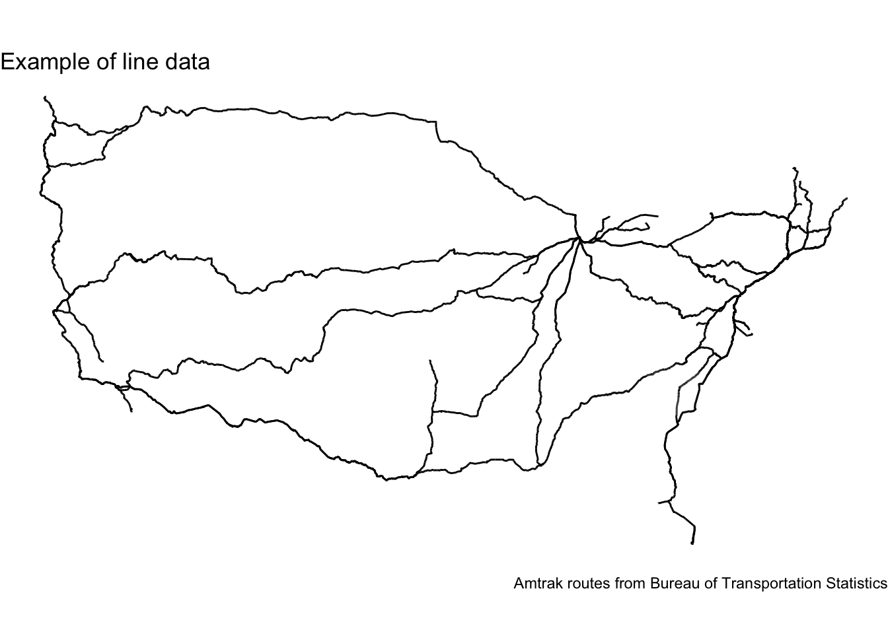
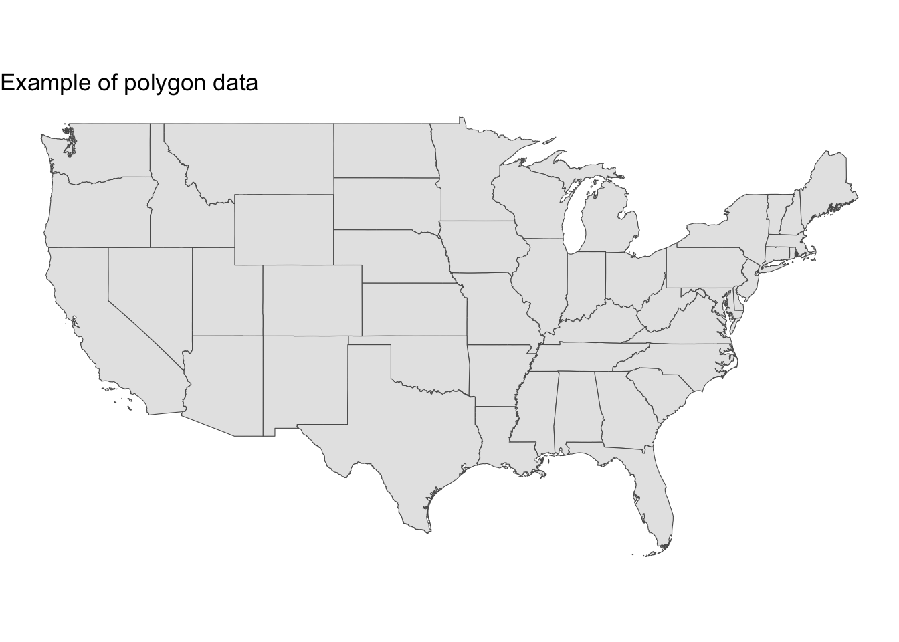
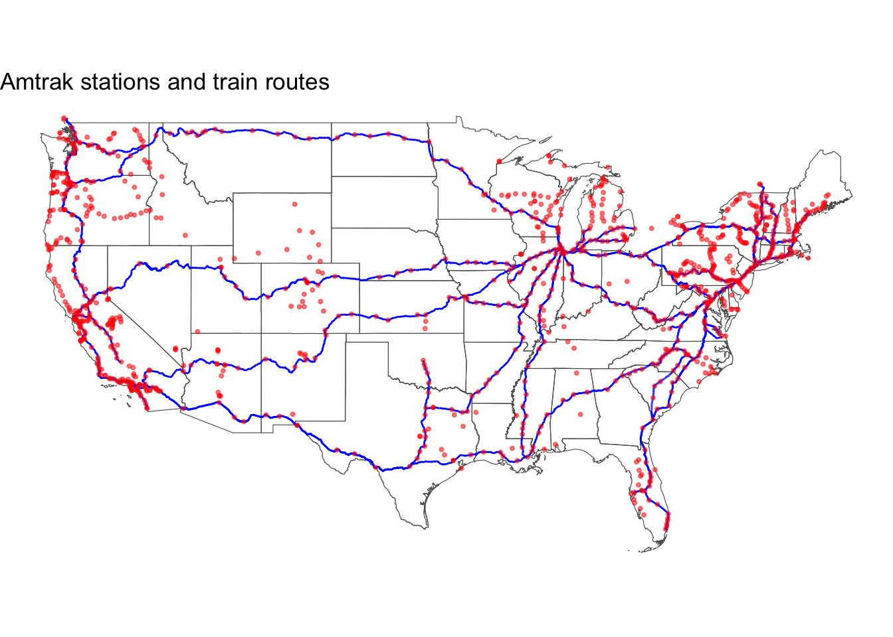
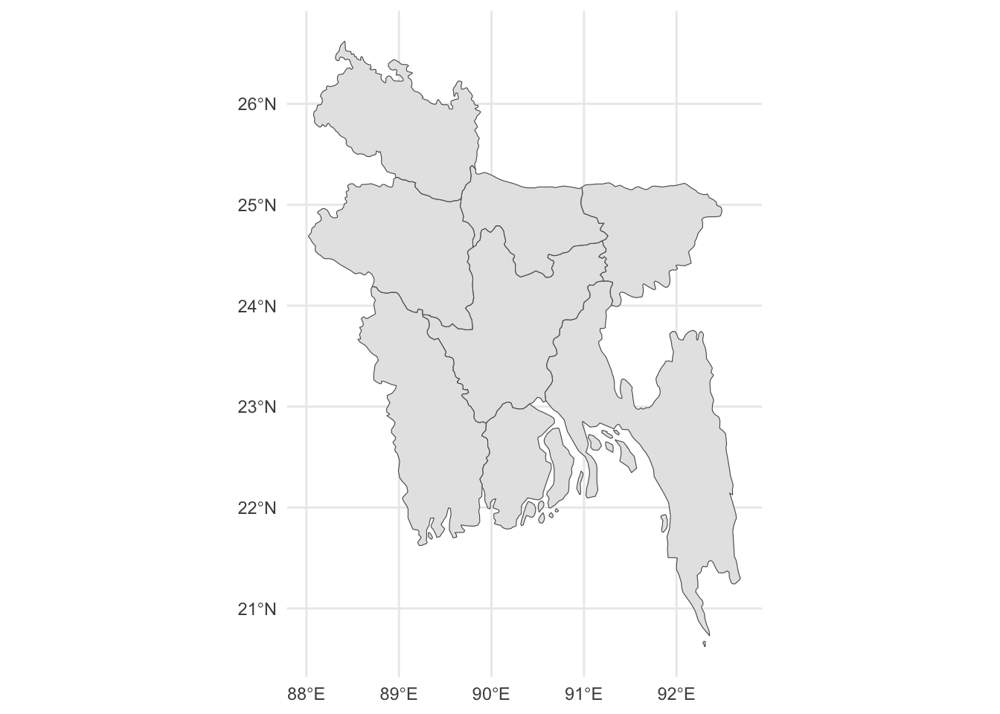
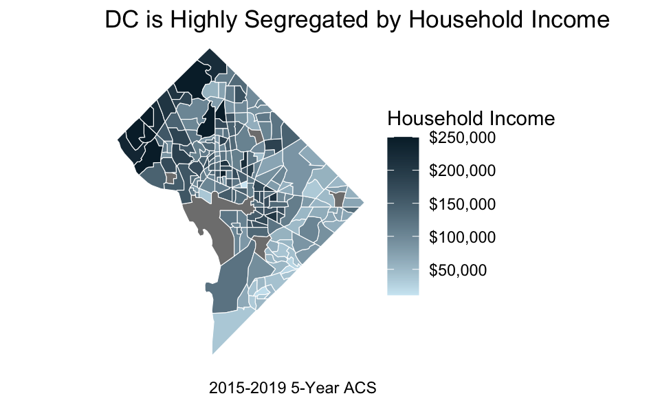
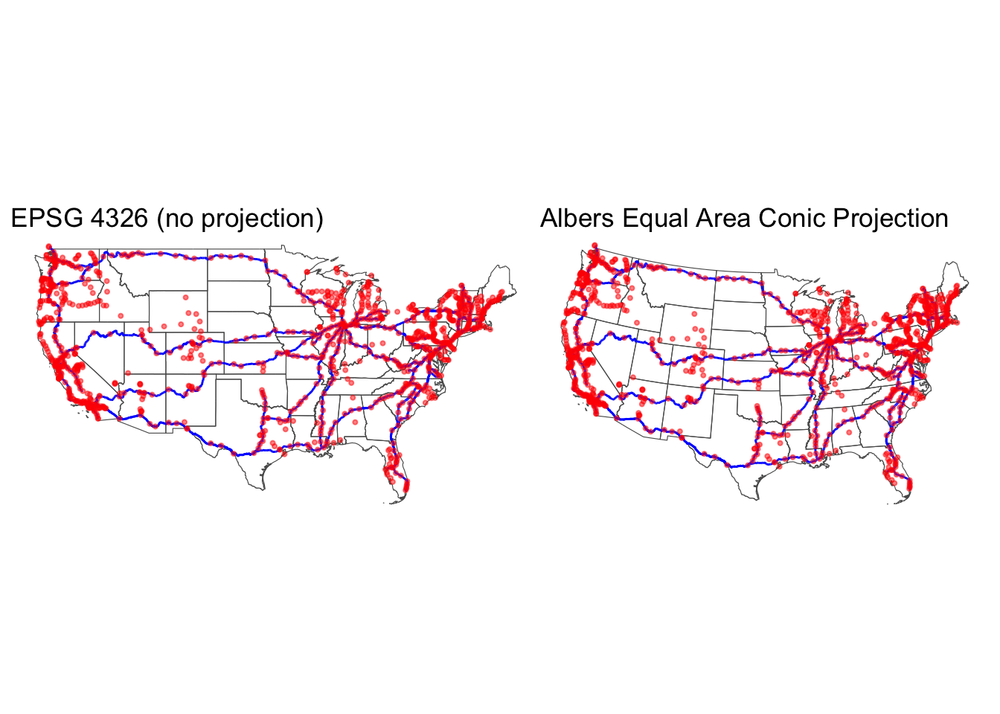
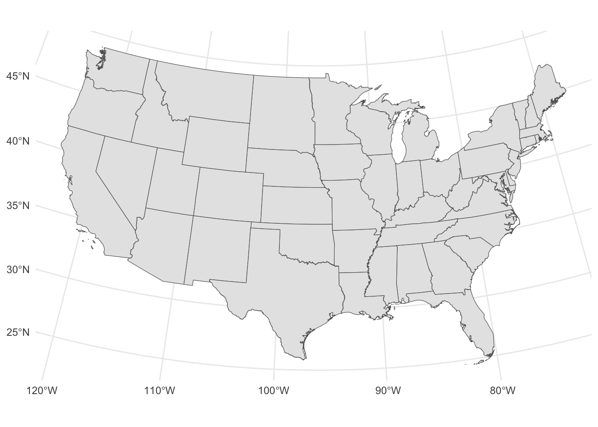
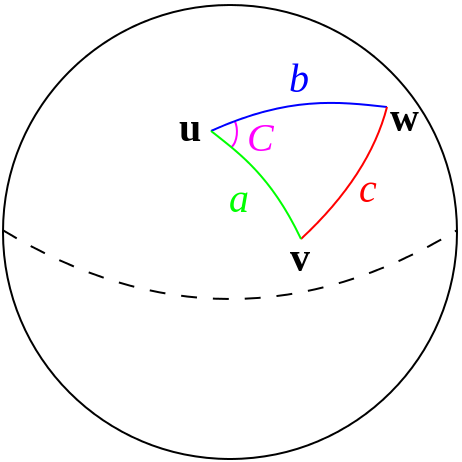

In this chapter, we introduce mapping and geospatial analysis using the simple features framework in R.

The Tabula Rogeriana was an early world atlas by geographer Al Idrisi. This is a reconstituion by Konrad Miller.
23.1 Motivation
Many data are inherently spatial. We need tools to manipulate, explore, communicate, and model spatial data.
Point-and-click tools suffer many of the drawbacks outlined in earlier note sets.
Proprietary geospatial tools are prohibitively expensive.
Everyone loves maps.
23.2library(sf) and geospatial data
Geospatial data are multidimensional. The outline of a simple rectangular state like Kansas may have a few vertices and a complex state like West Virginia may have many more vertices. Furthermore, geospatial data have auxiliary information about bounding boxes and projections. Fortunately, library(sf) can store all of this information in a rectangular tibble that works well with library(dplyr) and library(ggplot2).
Note
If you are looking online, you may notice R code written in the (similarly named) library(sp) package. library(sp) is older than library(sf), and library(sp)is no longer being developed. Among its many advantages, library(sf) integrates seamlessly with the tidyverse.
Simple features
Simple features is a standard for storing and accessing geometric features outlined in the ISO 19125 standard.
library(sf) stores data in a sf dataframe. sf dataframes are similar to normal dataframes except that, in addition to regular rows and columns, they have a special geometry column that stores vector geospatial data. You can think of each record in an sf dataframe as having two sets of data: 1. Attribute data: the non-spatial data. These data are stored in all columns except the geometry column 2. Geographic data: the geospatial data stored in the geometry column.
Vector Geospatial data
Vector geospatial data consist of some combination of points, lines, or polygons.
Consider this example of vector geospatial data:
library(sf)
Linking to GEOS 3.11.0, GDAL 3.5.3, PROJ 9.1.0; sf_use_s2() is TRUE
amtrak_stations_file <-here("data", "amtrak_stations.geojson")# download Amtrak dataif(!file.exists(amtrak_stations_file)) {download.file(url ="https://opendata.arcgis.com/datasets/628537f4cf774cde8aa9721212226390_0.geojson",destfile = amtrak_stations_file )}# read sf dataamtrak_stations <-st_read(amtrak_stations_file, quiet =TRUE)# print the geometry column# NOTE: geometry columns are "sticky" -- geometry is returned even though it # isn't include in select()amtrak_stations |>select(stationnam)
Simple feature collection with 1096 features and 1 field
Geometry type: POINT
Dimension: XY
Bounding box: xmin: -124.2883 ymin: 25.84956 xmax: -68.67001 ymax: 49.27376
Geodetic CRS: WGS 84
First 10 features:
stationnam geometry
1 Alma, MI POINT (-84.64484 43.39173)
2 Albany, NY POINT (-73.80919 42.7445)
3 Abbotsford-Colby, WI POINT (-90.31467 44.92856)
4 Aberdeen, MD POINT (-76.16326 39.50845)
5 Absecon, NJ POINT (-74.50148 39.42405)
6 Albuquerque, NM POINT (-106.648 35.08207)
7 Antioch-Pittsburg, CA POINT (-121.816 38.01771)
8 Arcadia, MO POINT (-90.62441 37.59217)
9 Atlantic City, NJ POINT (-74.4399 39.3627)
10 Ardmore, OK POINT (-97.12552 34.17247)
Note
The geometry column in a sf dataframe is “sticky.” Even though geometry was not included in select(), it is still returned. sf works this way because the spatial data stored in the geometry column is essential to the object (it couldn’t be a geospatial data set without the geographic component of the data!).
If you are dead-set on dropping a geometry column, you can use sf::st_drop_geometry() which returns a data.frame.
23.2.1 Points
Points
Points, which library(sf) calls POINT, are zero-dimensional geospatial objects. Points are often a single longitude and latitude.
Let’s map the Amtrak stations from the above example:
# create a mapamtrak_stations |>ggplot() +geom_sf() +labs(title ="Example of point data",caption ="Amtrak stations from opendata.arcgis.com") +theme_void()

23.2.2 Linestrings
Linestrings
A line (LINESTRING) is composed of a sequence of multiple points.
amtrak_routes_file <-here("data", "Amtrak_Routes.geojson")# load sf dataamtrak_routes <-st_read(amtrak_routes_file, quiet =TRUE)# create map with lines dataamtrak_routes |>ggplot() +geom_sf() +labs(title ="Example of line data",caption ="Amtrak routes from Bureau of Transportation Statistics" ) +theme_void()

23.2.3 Polygons
Polygons
Polygons (POLYGON) are two-dimensional geospatial objects. Like lines, polygons are composed of many points, but the first and last point in a polygon must be the same.
Here is a simple example with of the Continental United States:
# load and subset states datastates <- tigris::states(cb =TRUE, progress_bar =FALSE) |>filter(!STATEFP %in%c("78", "69", "66", "60", "72", "02", "15"))
Retrieving data for the year 2021
states |>ggplot() +geom_sf() +labs(title ="Example of polygon data") +theme_void()

23.2.4 Multi-Geometries
In practice, many records in a sf dataframe do not have type LINE, POINT or POLYGON, but rather have type MULTIPOINT, MULTILINE or MULTIPOLYGON. This means that, for any given record in a sf dataframe, the non-spatial data is associated with multiple points, lines, or polygons, respectively.
Consider the example of California. California is a single state, so, in the states sf dataframe above, it should be a single record. However, California has not only one large landmass but also many small islands, each of which is its own polygon. Given that California is composed of multiple polygons, the MULTIPOLYGON type is most well-suited for representing it.
library(sf) can represent 18 geometry types. To read about the 12 we do not mention, read the sf documentation.
If you are struggling with these concepts or want to read about them in greater depth, see Chapter 2.2.4 of Geocomputation with R.
library(sf) implements simple features in R and introduces sf data.
23.3geom_sf()
geom_sf() plots sf data. The function automatically references the geometry column and does not require any aesthetic mappings. geom_sf() works well with layers and it is simple to combine point, line, and polygon data.
geom_sf() works like geom_point() for point data, geom_line() for linestring data, and geom_area() for polygon data (e.g. the fill argument controls the color of shapes and color controls the border colors of shapes for polygons).
amtrak_map <-ggplot() +geom_sf(data = states,fill =NA ) +geom_sf(data = amtrak_routes, color ="blue" ) +geom_sf(data = amtrak_stations, color ="red", size =0.75,alpha =0.5 ) +labs(title ="Amtrak stations and train routes") +theme_void()amtrak_map

23.4 Getting and loading spatial data
23.4.1 Shapefiles
Shapefiles are a proprietary file format created by ESRI, the company that creates ArcGIS. Shapefiles are popular because ESRI dominated the GIS space for a long time. A shapefile is actually usually three or more binary files.
st_read() reads shapefiles into R in the sf format. Simply point the function to the file ending in .shp.
Note
Note that the other binary files associated with the shapefile must also be located in the same directory as the .shp file.
23.4.2 GeoJSON
.geojson is an open source file type for storing geospatial data. It is plain text, which means it plays well with version control.
st_read() also reads GeoJSON data. Point the function at a file ending in .geojson to read the data.
23.4.3 .csv files
Lots of geographic information is stored in .csv files–especially for point data where it is sensible to have a longitude and latitude columns. Loading point data from .csv files requires two steps. First, read the file with read_csv(). Second, use st_as_sf() to convert the tibble into an sf object and specify the columns with longitude and latitude with the coords argument:
st_as_sf(data, coords =c("lon", "lat"))
Note
It is trickier (but far less common) to load line, polygon, and multipolygon data from .csvs.
23.4.4library(tigris)
library(tigris) is an exceptional package that downloads and provides TIGER/Line shapefiles from the US Census Bureau. TIGER stands for Topologically Integrated Geographic Encoding and Referencing.
The package provides lots of data with simple functions (full list here) like counties() to access counties, tracts() to access census tracts, and roads() to access roads. The state and county arguments accept names and FIPS codes.
library(tigris) has a new shift option that elides Alaska and Hawaii next to the Continental United States.
Exercise 1
Using library(tigris), pull roads data for DC with state = "DC" and county = "District of Columbia".
Create a map with geom_sf() and theme_void().
TIGER line files are high-resolution and follow legal boundaries. Sometimes the maps are counterintuitive. For example, the outline of Michigan will include the Great Lakes, which is uncommon. Cartographic boundary files are quicker to download and are clipped to the coastline, which better aligns with expectations.
library(tigris)
To enable caching of data, set `options(tigris_use_cache = TRUE)`
in your R script or .Rprofile.
The rgeoboundaries package is a client for the geoBoundaries API, providing country political administrative boundaries for countries around the world. This package can be installed from GitHub using the remotes package as follows
The rgeoboundaries package can provide boundaries for countries at different administrative division levels. For example, here we obtain the adm1 boundaries (the first subnational level) for Bangladesh. The type argument of the geoboundaries() function can be set to obtain a simplified version of the boundaries.
library(rgeoboundaries)bangladesh <-geoboundaries(country ="Bangladesh", adm_lvl ="adm1",type ="SSCGS"# Simplified Single Country Globally Standardized) ggplot(data = bangladesh) +geom_sf()

Exercise 2
We want to read in and map the locations of World Bank development projects in Bangladesh downloaded from AidData, which includes geographic and other information about development projects.
Copy the below code into your script to read in aiddata_bangladesh.csv with read_csv().
Rows: 2648 Columns: 21
── Column specification ────────────────────────────────────────────────────────
Delimiter: ","
chr (15): project_id, project_location_id, place_name, location_type_code, l...
dbl (6): precision_code, geoname_id, latitude, longitude, location_class, g...
ℹ Use `spec()` to retrieve the full column specification for this data.
ℹ Specify the column types or set `show_col_types = FALSE` to quiet this message.
Use st_as_sf() to convert the .csv to sf.
Use st_set_crs(value = 4326) to set the CRS (we will discuss below).
Add a basemap of adm1 boundaries for Bangladesh using the bangladesh object created above.
Map the Bangladesh development project data with color = status.
23.4.5library(tidycensus)
library(tidycensus), which was created by the creator of library(tigris), is also a valuable source of geographic data. Simply include geometry = TRUE in functions like get_acs() to pull the shapes data as sf. The state and county arguments accept names and FIPS codes.
library(tidycensus) sometimes requires the same Census API Key we used in the API tutorial (sign up here). You should be able to install your API key into your version of R with census_api_key("your-key-string", install = TRUE). To obtain your keystring, you can use library(dotenv) and Sys.getenv(<key name in .env file>).
library(tidycensus) has two big differences from library(tigris): 1. it can pull Census data with the geographic data, and 2. it only provides cartographic boundary files that are smaller and quicker to load and more familiar than TIGER/Line shapefiles by default.
library(tidycensus)
Warning: package 'tidycensus' was built under R version 4.3.3
dc_income <-get_acs(geography ="tract", variables ="B19013_001", state ="DC", county ="District of Columbia", geometry =TRUE,year =2019,progress =FALSE)
Getting data from the 2015-2019 5-year ACS
Downloading feature geometry from the Census website. To cache shapefiles for use in future sessions, set `options(tigris_use_cache = TRUE)`.
Both library(tigris) and library(tidycensus) have a year parameter that determines the year of the data obtained in functions like tidycensus::get_acs() or tigris::states(). This parameter currently defaults to 2020 for get_acs() and tigris functions. tidycensus::get_acs() also notably defaults to pulling 5-year ACS data. We recommend reading the documentation for these functions to understand the parameter options and their default values.
23.5 Choropleths
Choropleths are maps that use fill to display the variation in a variable across geographies.
Getting data from the 2018-2022 5-year ACS
Downloading feature geometry from the Census website. To cache shapefiles for use in future sessions, set `options(tigris_use_cache = TRUE)`.

Exercise 3
Copy the code that pulls income in DC by census tract under library(tidycensus).
Try to recreate the above choropleth using fill.
Hint: Use scale_fill_gradient() with low = "#cfe8f3" and high = "#062635".
23.6 Spatial concepts
Geospatial work requires making an assumption about the shape of the Earth and a decision about how to project three-dimensions on to a two-dimensional surface.
Note
The Earth is an ellipsoid where the diameter from pole-to-pole is smaller than from equator to equator. In other words, it is swollen at the equator.
Geographic coordinate reference systems
Geographic coordinate reference systems represent geographies with a three-dimensional representation of the Earth. (i.e., The data have not been projected from what we think of as a globe to what we think of as a map). Data are typically stored as longitude and latitude.
Projected coordinate reference system
Projected coordinate reference system represent geographies with a two-dimensional representation of the Earth. A projected CRS is the combination of a geographic CRS and a projection. Data are typically stored in feet or meters, which is useful for distance-based spatial operations like calculating distances and creating buffers.
Projection
A projection is a mathematical transformation that converts three-dimensional coordinates for a spheroid/ellipsoid into a two-dimensions.
23.6.1 Popular projections
All projections are wrong, but all projections are wrong in different ways with different uses.
Cylindrical projections maintain lines of longitude and latitude but distort areas and distances. Conic projections distort longitudes and latitudes but maintain areas. Azimuthal projections maintain distances but struggle to project large areas.
Mercator projection
The Mercator projection is widespread because it maintains straight lines for longitude and latitude. This was useful for navigators on the open sea hundreds of years ago. This is less useful in the 21st century. The Mercator projection is conformal, so while it maintains angles, it seriously distorts area. To see this, play the Mercator Puzzle.
The Albers Equal Area projection, which is a conic projection, doesn’t maintain angles, but it is an equal area projection. It is the default projection of the Urban Institute.
Figure 23.2: Albers
State Plane Coordinate Systems (SPCS)
The State Plane Coordinate System is a collection of 124 coordinate systems for specific areas of the United States. States with east-west directions, like Tennessee use the Lambert conformal conic projection. North-south states like Illinois use the transverse Mercator projection. SPCS is not a projection, but the coordinate systems are projected. This site has a thorough introduction.
A CRS can be uniquely identified by EPSG codes and proj4 strings. EPSG comes from the European Petrol Survey Group, which no longer exists. EPSG codes are 4-6 numbers. Always check to see if a CRS is specified after loading spatial data. Here are some defaults:
The EPSG code will always be 4326 for GeoJSONs.
.csv files with longitude and latitude will typically be 4326.
R should read the CRS from .prj file when reading shapefiles. If it fails, open the .prj file and use this tool to identify the EPSG code.
Use st_crs() to see the CRS. Use st_set_crs() to set the CRS. Use st_transform() to transform the CRS. Note that st_set_crs() simply adds or updates CRS information - it does not transform the data. When using multiple different geospatial datasets for mapping (e.g. layering points and polygons), they should have the same CRS prior to mapping.
A datum is a reference point for measuring locations on the surface of the Earth. The datum defines an anchor point for coordinate systems and thus allows a unique set of longitudes and latitudes to fully define the surface of the Earth.
The invention of GPS has standardized datums. Geodetic datums like the North American Datum of 1983 (NAD83) and the World Geodetic System of 1984 (WGS84) now dominate. In fact, all GPS measurements are based on WGS84. This blog describes the importance of datums.
Using the EPSG Dataset v10.019, a product of the International Association of Oil & Gas Producers.
Please view the terms of use at https://epsg.org/terms-of-use.html.
# A tibble: 10 × 6
crs_code crs_name crs_type crs_gcs crs_units crs_proj4
<chr> <chr> <chr> <dbl> <chr> <chr>
1 6593 NAD83(2011) / Virginia North (… project… 6318 us-ft +proj=lc…
2 6592 NAD83(2011) / Virginia North project… 6318 m +proj=lc…
3 3686 NAD83(NSRS2007) / Virginia Nor… project… 4759 us-ft +proj=lc…
4 3685 NAD83(NSRS2007) / Virginia Nor… project… 4759 m +proj=lc…
5 32146 NAD83 / Virginia North project… 4269 m +proj=lc…
6 32046 NAD27 / Virginia North project… 4267 us-ft +proj=lc…
7 2924 NAD83(HARN) / Virginia North (… project… 4152 us-ft +proj=lc…
8 2853 NAD83(HARN) / Virginia North project… 4152 m +proj=lc…
9 2283 NAD83 / Virginia North (ftUS) project… 4269 us-ft +proj=lc…
10 6488 NAD83(2011) / Maryland (ftUS) project… 6318 us-ft +proj=lc…
The top suggestion for virginia_stations is CRS == 6593. If we look up this CRS we see it has geodetic datum NAD83 and is based on the Lambert Conformal Conic projection used for SPCS. If we look up the best SPCS for Northern Virginia, we get CRS == 3686, which is the third recommendation.
The differences between these two recommendations are not significant.
Bottom line
That’s a lot of technical information. When mapping in the US
Use CRS = 4326 when you load the data to understand the locations you are mapping. This is not a projection but plotting the data acts like a projection.
Use CRS = 5070 if you are mapping the entire Continental US. Other useful EPSG codes are available here.
Use the recommended state plane coordinate system for state and local maps.
Here’s the map from earlier with EPSG 4326 on the left and EPSG 5070 (Alber’s Equal Area Conic Projection) on the right:

Exercise 4
Copy-and-paste the AidData exercise from exercise 2.
Repeat the mapping with a EPSG code that makes sense for Bangladesh using st_transform() (Hint: you can identify the EPSG code using suggest_crs(aiddata)).
Copy-and-paste the AidData exercise from exercise 2 again.
Repeat the mapping with a EPSG code that makes sense for Bangladesh using coord_sf(crs = ####) where #### is the EPSG code from step 2 (Hint:coord_sf() can be added to your mapping code following a + ). This skips the need for st_transform() when making maps.
23.7 Spatial operations
We often want to manipulate spatial data or use spatial data for calculations. This section covers a few common operations.
23.7.1 Aggregation
Sometimes we want to aggregate smaller geographies into larger geographies. This is simple with a group_by() and summarize() workflow. Suppose we want to combine North Dakota and South Dakota into Dakota.
# states to combinedmv_names <-c("South Dakota", "North Dakota")# add a projectionstates <- states |>st_transform(crs =5070)# aggregate states and make a mapstates |>mutate(new_NAME =if_else(NAME %in% dmv_names, "Dakota", NAME)) |>group_by(new_NAME) |>summarize() |>ggplot() +geom_sf()

23.7.2 Spatial Joins
Spatial joins are joins like left_join() but the join is based on geography instead of “by” variables. Note: both geographies must have the same CRS. Like with any join, it is important to track the number of rows before and after joins and to note that joins may be one-to-one, one-to-many.
st_join() performs a left spatial join in R. st_intersects means observations will join if the geographies in x touch the geographies in y. The sf package offers a number of different geometric confirmations that can be used for spatial joins, such as st_covered_by (identifies if x is copletely within y), st_within (identifies if x is within a specified distance of y) and many more. The sf cheat sheet provides a good outline of the different options.
Suppose we want to count the number of Amtrak stations in each state.
# set states CRS to 4326 to match the Amtrak dataamtrak_stations <-st_transform(amtrak_stations, crs =5070)# dimension before joindim(amtrak_stations)
[1] 1096 12
# spatial join using intersectionamtrak <-st_join(states, amtrak_stations, join = st_intersects)# dimension after join -- lose international stationsdim(amtrak)
[1] 1080 21
# count the number of stations per stateamtrak |>as_tibble() |># converting from sf to tibble speeds calculationsgroup_by(NAME) |>summarize(number_of_stations =n()) |>arrange(desc(number_of_stations))
# A tibble: 49 × 2
NAME number_of_stations
<chr> <int>
1 California 184
2 Oregon 87
3 New York 80
4 Pennsylvania 63
5 Michigan 54
6 Washington 50
7 Illinois 41
8 Wisconsin 37
9 Florida 31
10 Texas 31
# ℹ 39 more rows
23.7.3 Buffers
Adding buffers to points, lines, and polygons is useful for counting shapes near other shapes. For instance, we may want to count the number of housing units within 500 meters of a metro station or the number of schools more than 5 miles from a fire station.
Suppose we want to count the number of Amtrak stations within 5 kilometers of each Amtrak station. We can buffer the Amtrak station points, join the unbuffered data to the buffered data, and then count.
# add a buffer of 5 kilometers to each station# the units package is useful for setting buffers with different unitsamtrak_stations_buffered <-st_buffer( amtrak_stations, dist = units::set_units(5, "km"))# spatial join the unbuffered shapes to the buffer shapesamtrak_stations_joined <-st_join( amtrak_stations_buffered, amtrak_stations, join = st_intersects)# count the station namesamtrak_stations_joined |>as_tibble() |>count(stationnam.x, sort =TRUE)
# A tibble: 1,007 × 2
stationnam.x n
<chr> <int>
1 Monterey, CA 27
2 Yosemite National Park, CA 17
3 Boston, MA 9
4 Salem, OR 9
5 Seaside, OR 8
6 Manchester Center, VT 6
7 Eugene, OR 5
8 Las Vegas, NV 5
9 Oakland, CA 5
10 Palm Springs, CA 5
# ℹ 997 more rows
23.7.4 Distances
Euclidean distance is common for calculating straight line distances but does not make sense for calculating distances on the surface of an ellipsoid like Earth.
Instead, it is common to use Haversine distance which accounts for the curvature in the globe.

Figure 23.4: Haversine Distance
Suppose we want to find the closest and furthest Amtrak stations from Washington DC’s Union Station.
# create a data frame with just Union Stationunion_station <- amtrak_stations |>filter(state =="DC")no_union_station <- amtrak_stations |>filter(state !="DC") # calculate the distance from Union Station to all other stationsamtrak_distances <-st_distance(union_station, no_union_station)# find the closest stationamtrak_stations |>slice(which.min(amtrak_distances)) |>select(stationnam, city)
Simple feature collection with 1 feature and 2 fields
Geometry type: POINT
Dimension: XY
Bounding box: xmin: 1618448 ymin: 1915016 xmax: 1618448 ymax: 1915016
Projected CRS: NAD83 / Conus Albers
stationnam city geometry
1 Alexandria, VA Alexandria POINT (1618448 1915016)
# find the further stationamtrak_stations |>slice(which.max(amtrak_distances)) |>select(stationnam, city)
Simple feature collection with 1 feature and 2 fields
Geometry type: POINT
Dimension: XY
Bounding box: xmin: -2328052 ymin: 2299661 xmax: -2328052 ymax: 2299661
Projected CRS: NAD83 / Conus Albers
stationnam city geometry
1 Fortuna, CA Fortuna POINT (-2328052 2299661)
23.8 Geospatial modeling
Cross-sectional regression models assume that the error term is independently and identically distributed, which in turn means the dependent variable is independently and identically distributed. This is often a reasonable assumption.
The assumption of independence often falls apart with spatial data. If number of coal power plants in a state is an independent variable and atmospheric carbon dioxide in a state is the dependent variable, then it doesn’t make much sense to assume that North Carolina and South Carolina are independent. If South Carolina has many coal burning power plants, then the emissions could affect atmospheric carbon dioxide in North Carolina.
Spatial regression methods attempt to account for this dependence between observations.
Spatial autocorrelation
Spatial autocorrelation: Correlation between observations that are geographically close.
Process:
Estimate a non-spatial regression model.
Use tests of spatial autocorrelation like Moran’s I, Geary’s c, or Getis and Ord’s G-statistic on the residuals to test for spatial autocorrelation.
If spatial autocorrelation exists, the use a spatial error model or a spatial lag model.
23.9 Parting Thoughts
This note set works entirely with vector spatial data. Vector data consists of vertices turned into points, lines, and polygons.
Some spatial data are raster data, which are stored as pixels or grid cells. For example, a raster data set could have an even one square mile grid over the entire United States with data about the amount of soy crops within each pixel. It is common for satellite data to be converted to rasters. This website contains good example of raster data.
This is a brief introduction to spatial data handling in R. If you are interested in further understanding spatial data handling, processing, visualization, and modeling, we recommend Geocomputation with R(geocomp?). Spatial Data Science provides a great discussion of statistical modeling but is more technical and mathematical (also written in R). Geographical Data Science is also a fantastic place to learn more, but note that it is written in Python.